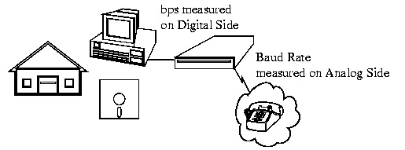

|
Modems
A modem (modulator-demodulator) is a device that modulates ananalog carrier signal to encode digital information, and also demodulates such a carrier signal to decode the transmitted information. The goal is to produce a signal that can be transmitted easily and decoded to reproduce the original digital data. Modems can be used over any means of transmitting analog signals, from light emitting diodes to radio. The most familiar example is a voice band modem that turns the digital data of a personal computer into modulatedelectrical signals in the voice frequency range of a telephone channel. These signals can be transmitted over telephone lines and demodulated by another modem at the receiver side to recover the digital data.
Modems are generally classified by the amount of data they can send in a given unit of time, usually expressed in bits per second (bit/s, or bps). Modems can alternatively be classified by their symbol rate, measured in baud. The baud unit denotes symbols per second, or the number of times per second the modem sends a new signal. For example, the ITU V.21 standard used audio frequency-shift keying, that is to say, tones of different frequencies, with two possible frequencies corresponding to two distinct symbols (or one bit per symbol), to carry 300 bits per second using 300 baud.
Modem Types
There are many types of modems, the most common are:
- Optical Modems
Uses optical fibre cable instead of wire. The modem converts the digital signal to pulses of light to be transmitted over optical lines. (more commonly called a media adapter or transceiver)
- Short Haul Modems
Modems used to transmit over 20 miles or less. Modems we use at home or to connect computers together between different offices in the same building.
- Acoustic Modem
A modem that coupled to the telephone handset with what looked like suction cups that contained a speaker and microphone. Used for connecting to hotel phones for travelling salespeople.
- Smart Modem
Modem with a CPU (microprocessor) on board that uses the Hayes AT command set. This allows auto-answer & dial capability rather than manually dialing & answering.
- Digital Modems
Converts the RS-232 digital signals to digital signals more suitable for transmission. (also called a media adapter or transceiver)
- V.32 Modem
Milestone modem that used a 2400 Baud modem with 4 bit encoding. This results in a 9600 bps (bits per second) transfer rate. It brought the price of high speed modems below $5,000.

Baud is the speed at which the Analog data is changing on the Voice Channel and bps is the speed that the decoded digital data is being transferred.
Features of Modems
- Speed
The speed at which the modem can send data in bps (bits per second). Typically modem speeds are: 300, 600, 1200, 2400, 4800, 9600, 14.4K, 19.2K, 28.8K bps
- Auto Dial /Redial
Smart Modems can dial the phone number and & auto redial if a busy signal is received.
- Auto Answer
Most modems can automatically answer the phone when an incoming call comes in. They have Ring Detect capability.
- Self-Testing
New modems have self-testing features. They can test the digital connection to the terminal /computer and the analog connection to a remote modem. They can also check the modem's internal electronics.
- Voice over Data
Voice over Data modems allow a voice conversation to take place while data is being transmitted. This requires both the source and destination modems to have this feature.
|